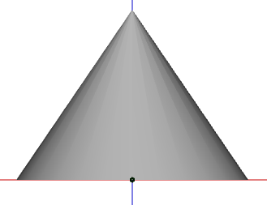

H3DU.Meshes
new H3DU.Meshes()
Contains methods that create meshes of various geometric shapes and solids.
Methods
- createBox
Creates a mesh of a box (rectangular prism), which will be centered at the origin. - createCapsule
Creates a mesh of a capsule, centered at the origin. - createClosedCylinder
Creates a mesh of a closed cylinder. - createCylinder
Creates a mesh of a cylinder. - createDisk
Creates a mesh of a 2D disk. - createLathe
Creates a mesh of a figure generated by revolving a path of 2-dimensional points about the Z axis. - createPartialDisk
Creates a mesh of a 2D disk or an arc of a 2D disk. - createPlane
Creates a mesh of a 2D rectangle, centered at the origin. - createPointedStar
Creates a mesh in the form of a two-dimensional n-pointed star. - createSphere
Creates a mesh of a sphere, centered at the origin. - createTorus
Creates a mesh of a torus (donut), centered at the origin.
(static) H3DU.Meshes.createBox(xSize, ySize, zSize, [inward])
Creates a mesh of a box (rectangular prism), which will be centered at the origin. See the "Creating Shapes" tutorial. Will create texture coordinates such that the same texture is used on each face of the box. Texture coordinates are generated assuming that the coordinate (0,0) is at the lower-left corner of the texture and (1,1) is at the upper-right corner. The resulting mesh buffer will use 36 vertex indices divided into 12 triangles, with each face using two triangles. The faces will be ordered as follows: Negative X face, positive X face, negative Y face, positive Y face, negative Z face, positive Z face.
Parameters
xSize(Type: number)
Width of the box.ySize(Type: number)
Height of the box.zSize(Type: number)
Depth of the box.inward(Type: boolean) (optional)
If true, the normals generated by this method will point inward; otherwise, outward. Should normally be false unless the box will be viewed from the inside.
Return Value
The generated mesh. (Type: MeshBuffer)
(static) H3DU.Meshes.createCapsule([radius], [length], [slices], [stacks], [middleStacks], [flat], [inside])
Creates a mesh of a capsule, centered at the origin. The length of the capsule will run along the Z axis. (If the capsule has a high length and a very low radius, it will resemble a 3D line with rounded corners.)
Will also generate texture coordinates such that the V (vertical) coordinates start from the bottom of the texture and increase from the negative to positive Z axis, and the U (horizontal) coordinates start from the left of the texture and increase from the positive X to positive Y to negative X to negative Y to positive X axis. Texture coordinates are generated assuming that the coordinate (0,0) is at the lower-left corner of the texture and (1,1) is at the upper-right corner.
If the "length" parameter is 0, the X, Y, and Z coordinates of a point on the solid are as described in Meshes.createSphere. See the "Creating Shapes" tutorial.
Parameters
radius(Type: number) (optional)
Radius of each spherical end of the capsule. May be null or omitted, in which case the default is 1.length(Type: number) (optional)
Length of the middle section. May be null or omitted, in which case the default is 1. If this value is 0, an approximation to a sphere will be generated.slices(Type: number) (optional)
Number of vertical sections the capsule consists of. This function will create an octahedron if "slices" is 4 and "stacks" is 2. Must be 3 or greater. May be null or omitted, in which case the default is 16.stacks(Type: number) (optional)
Number of horizontal sections each spherical half consists of. May be null or omitted, in which case the default is 8.middleStacks(Type: number) (optional)
Number of vertical sections the middle of the capsule consists of. May be null or omitted, in which case the default is 1.flat(Type: boolean) (optional)
If true, will generate normals such that the capsule will be flat shaded; otherwise, will generate normals such that the capsule will be smooth shaded.inside(Type: boolean) (optional)
If true, the normals generated by this method will point inward; otherwise, outward. Should normally be false unless the capsule will be viewed from the inside.
Return Value
The generated mesh. (Type: MeshBuffer)
(static) H3DU.Meshes.createClosedCylinder(baseRad, topRad, height, slices, stacks, [flat], [inside])
Creates a mesh of a closed cylinder. The cylinder's base will be centered at the origin and its height will run along the positive Z axis. The base and top will be included in the mesh if their radius is greater than 0. Will generate texture coordinates for the cylinder and for the base and top. The base's and top's texture coordinates will be such that the texture will be flat as seen from either. Texture coordinates are generated assuming that the coordinate (0,0) is at the lower-left corner of the texture and (1,1) is at the upper-right corner.
See Meshes.createCylinder for information on how texture coordinates for the cylinder (other than the base and top) are generated and how to find the coordinates of a particular point on the cylinder.
See the "Creating Shapes" tutorial.
Parameters
baseRad(Type: number)
Radius of the base of the cylinder. See Meshes.createCylinder.topRad(Type: number)
Radius of the top of the cylinder. See Meshes.createCylinder.height(Type: number)
Height of the cylinder.slices(Type: number)
Number of lengthwise "slices" the cylinder consists of. See Meshes.createCylinder.stacks(Type: number)
Number of vertical stacks the cylinder consists of. May be null or omitted, in which case the default is 1.flat(Type: boolean) (optional)
If true, will generate normals such that the cylinder will be flat shaded; otherwise, will generate normals such that the cylinder will be smooth shaded.inside(Type: boolean) (optional)
If true, the normals generated by this method will point inward; otherwise, outward. Should normally be false unless the cylinder will be viewed from the inside.
Return Value
The generated mesh. (Type: MeshBuffer)
Examples
The following method creates a cone that's closed at its base. 
function createClosedCone(radius,height,slices) {
return Meshes.createClosedCylinder(radius,0,height,slices,1);
}
(static) H3DU.Meshes.createCylinder(baseRad, topRad, height, [slices], [stacks], [flat], [inside])
Creates a mesh of a cylinder. The cylinder's base will be centered at the origin and its height will run along the positive Z axis. The base and top themselves will not be included in the mesh.
Texture coordinates for the cylinder (other than the base) will be generated such that the V (vertical) coordinates start from the bottom of the texture and increase from the origin to the positive Z axis, and the U (horizontal) coordinates start from the left of the texture and increase from the positive X to positive Y to negative X to negative Y to positive X axis. Texture coordinates are generated assuming that the coordinate (0,0) is at the lower-left corner of the texture and (1,1) is at the upper-right corner.
The X, Y, and Z coordinates of a point on the cylinder are
(-R*cos(λ), -R*sin(λ), H*φ),
where φ = (π/2 + L)/π, L is the latitude in radians,
λ is the longitude in radians, H = height,
R = baseRad + (topRad - baseRad) * φ,
and west and south latitudes and
longitudes are negative. (The formula for converting latitude
and longitude is mentioned here because their meaning depends on
exactly how the texture coordinates are generated on the cylinder.
It assumes that in the texture, longitudes range from -180° to 0° to 180° from
left to right, and latitudes range from 90° to 0° to -90° from top to bottom.)
See the "Creating Shapes" tutorial.
Parameters
baseRad(Type: number)
Radius of the base of the cylinder. If 0, this function will create an approximation to a downward pointing cone.topRad(Type: number)
Radius of the top of the cylinder. If 0, this function will create an approximation to an upward pointing cone.height(Type: number)
Height of the cylinder.slices(Type: number) (optional)
Number of lengthwise "slices" the cylinder consists of, each slice going through the center of the cylinder. This function will create a triangular prism if "slices" is 3 and both radiuses are the same; a triangular pyramid if "slices" is 3 and either radius is zero; a rectangular prism if "slices" is 4 and both radiuses are the same; and a rectangular pyramid if "slices" is 4 and either radius is zero. Must be 3 or greater. May be null or omitted, in which case the default is 32.stacks(Type: number) (optional)
Number of vertical stacks the cylinder consists of. May be null or omitted, in which case the default is 1.flat(Type: boolean) (optional)
If true, will generate normals such that the cylinder will be flat shaded; otherwise, will generate normals such that the cylinder will be smooth shaded.inside(Type: boolean) (optional)
If true, the normals generated by this method will point inward; otherwise, outward. Should normally be false unless the cylinder will be viewed from the inside.
Return Value
The generated mesh. (Type: MeshBuffer)
(static) H3DU.Meshes.createDisk(inner, outer, [slices], [loops], [inward])
Creates a mesh of a 2D disk. Assuming the Y axis points up, the X axis right, and the Z axis toward the viewer, the first vertex in the outer edge of the 2D disk will be at the 12 o'clock position. Will also generate texture coordinates, assuming that the coordinate (0,0) is at the lower-left corner of the texture and (1,1) is at the upper-right corner. See the "Creating Shapes" tutorial.
Parameters
inner(Type: number)
Radius of the hole in the middle of the disk. If 0, no hole is created and the method will generate a regular polygon with n sides, where n is the value of "slices". For example, if "inner" is 0 and "slices" is 3, the result will be an equilateral triangle; a square for 4 "slices", a regular pentagon for 5 "slices", and so on.outer(Type: number)
Outer radius of the disk.slices(Type: number) (optional)
Number of slices going around the disk. May be null or omitted; default is 16.loops(Type: number) (optional)
Number of concentric rings the disk makes up. May be null or omitted; default is 1.inward(Type: boolean) (optional)
If true, the normals generated by this method will point in the opposite direction of the positive Z axis; otherwise, in the same direction of the positive Z axis. Default is false.
Return Value
The generated mesh. (Type: MeshBuffer)
(static) H3DU.Meshes.createLathe(points, [slices], [flat], [inside])
Creates a mesh of a figure generated by revolving a path of 2-dimensional points about the Z axis.
Texture coordinates will be generated such that the V (vertical) coordinates start from the bottom of the texture and increase along the Z axis in the direction of the given path, and the U (horizontal) coordinates start from the left of the texture and increase from the positive X to positive Y to negative X to negative Y to positive X axis. Texture coordinates are generated assuming that the coordinate (0,0) is at the lower-left corner of the texture and (1,1) is at the upper-right corner.
Parameters
points(Type: Array.<number>)
Array of alternating X and Z coordinates describing a two-dimensional path that will revolve around the Z axis to generate the figure (the first number is an X coordinate, the second is a Z coordinate, and so on). Each Z coordinate is a Z coordinate of the point where the path lies, and each X coordinate is the radius of the figure at that point. The Z coordinates should be given in increasing order and should not be the same from one point to the next. This parameter's length must be 4 or greater and be an even number.slices(Type: number) (optional)
Number of lengthwise "slices" the figure consists of. Must be 3 or greater. May be null or omitted; default is 32.flat(Type: boolean) (optional)
If true, will generate normals such that the figure will be flat shaded; otherwise, will generate normals such that the figure will be smooth shaded.inside(Type: boolean) (optional)
If true, the normals generated by this method will point inward; otherwise, outward. Should normally be false unless the figure will be viewed from the inside.
Return Value
The generated mesh. (Type: MeshBuffer)
(static) H3DU.Meshes.createPartialDisk(inner, outer, [slices], [loops], [start], [sweep], [inward])
Creates a mesh of a 2D disk or an arc of a 2D disk. Will also generate texture coordinates, assuming that the coordinate (0,0) is at the lower-left corner of the texture and (1,1) is at the upper-right corner. See the "Creating Shapes" tutorial.
Parameters
inner(Type: number)
Radius of the hole where the middle of the complete disk would be. If 0, no hole is created.outer(Type: number)
Outer radius of the disk.slices(Type: number) (optional)
Number of slices going around the partial disk. May be null or omitted; default is 32.loops(Type: number) (optional)
Number of concentric rings the partial disk makes up. May be null or omitted; default is 1.start(Type: number) (optional)
Starting angle of the partial disk, in degrees. May be null or omitted; default is 0. 0 degrees is at the positive Y axis, and 90 degrees at the positive X axis. Assuming the Y axis points up, the X axis right, and the Z axis toward the viewer, 0 degrees is at the 12 o'clock position, and 90 degrees at the 3 o'clock position.sweep(Type: number) (optional)
Arc length of the partial disk, in degrees. May be null or omitted; default is 360. May be negative.inward(Type: boolean) (optional)
If true, the normals generated by this method will point in the opposite direction of the positive Z axis; otherwise, in the same direction of the positive Z axis. Default is false.
Return Value
The generated mesh. (Type: MeshBuffer)
(static) H3DU.Meshes.createPlane([width], [height], [widthDiv], [heightDiv], [inward])
Creates a mesh of a 2D rectangle, centered at the origin. The plane's Z coordinate will be 0. Will also generate texture coordinates that increase toward the positive X and Y axes. The texture coordinates will range from 0 to 1 on each end of the 2D rectangle. Texture coordinates are generated assuming that the coordinate (0,0) is at the lower-left corner of the texture and (1,1) is at the upper-right corner. See the "Creating Shapes" tutorial.
Parameters
width(Type: number) (optional)
Width of the rectangle. May be null or omitted; default is 1.height(Type: number) (optional)
Height of the rectangle. May be null or omitted; default is 1.widthDiv(Type: number) (optional)
Number of horizontal subdivisions. May be null or omitted; default is 1.heightDiv(Type: number) (optional)
Number of vertical subdivisions. May be null or omitted; default is 1.inward(Type: boolean) (optional)
If true, the normals generated by this method will point in the opposite direction of the positive Z axis; otherwise, in the same direction of the positive Z axis. Default is false.
Return Value
The generated mesh. (Type: MeshBuffer)
(static) H3DU.Meshes.createPointedStar(points, firstRadius, secondRadius, [inward])
Creates a mesh in the form of a two-dimensional n-pointed star. Will also generate texture coordinates, assuming that the coordinate (0,0) is at the lower-left corner of the texture and (1,1) is at the upper-right corner.
Parameters
points(Type: number)
Number of points in the star. Must be 2 or greater.firstRadius(Type: number)
First radius of the star. Must be 0 or greater; this parameter and secondRadius can't both be 0.secondRadius(Type: number)
Second radius of the star. Must be 0 or greater; this parameter and firstRadius can't both be 0.inward(Type: boolean) (optional)
If true, the normals generated by this method will point in the opposite direction of the positive Z axis; otherwise, in the same direction of the positive Z axis. Default is false.
Return Value
The generated mesh. (Type: MeshBuffer)
(static) H3DU.Meshes.createSphere([radius], [slices], [stacks], [flat], [inside])
Creates a mesh of a sphere, centered at the origin.
Will also generate texture coordinates such that the V (vertical) coordinates start from the bottom of the texture and increase from the negative to positive Z axis, and the U (horizontal) coordinates start from the left of the texture and increase from the positive X to positive Y to negative X to negative Y to positive X axis. Texture coordinates are generated assuming that the coordinate (0,0) is at the lower-left corner of the texture and (1,1) is at the upper-right corner.
The X, Y, and Z coordinates of a point on the sphere are
(-R*cos(δ)*cos(λ), -R*cos(δ)*sin(λ), R*sin(δ)),
where δ and λ are the latitude and longitude, respectively, in radians, R is the sphere's radius,
and west and south latitudes and
longitudes are negative. (The formula for converting latitude
and longitude is mentioned here because their meaning depends on
exactly how the texture coordinates are generated on the sphere.
It assumes that in the texture, longitudes range from -180° to 0° to 180° from
left to right, and latitudes range from 90° to 0° to -90° from top to bottom.)
See the "Creating Shapes" tutorial.
Parameters
radius(Type: number) (optional)
Radius of the sphere. May be null or omitted, in which case the default is 1.slices(Type: number) (optional)
Number of vertical sections the sphere consists of. This function will create an octahedron if "slices" is 4 and "stacks" is 2. Must be 3 or greater. May be null or omitted, in which case the default is 16.stacks(Type: number) (optional)
Number of horizontal sections the sphere consists of. May be null or omitted, in which case the default is 16.flat(Type: boolean) (optional)
If true, will generate normals such that the sphere will be flat shaded; otherwise, will generate normals such that the sphere will be smooth shaded.inside(Type: boolean) (optional)
If true, the normals generated by this method will point inward; otherwise, outward. Should normally be false unless the sphere will be viewed from the inside.
Return Value
The generated mesh. (Type: MeshBuffer)
(static) H3DU.Meshes.createTorus(inner, outer, [lengthwise], [crosswise], [flat], [inward])
Creates a mesh of a torus (donut), centered at the origin. Will also generate texture coordinates, assuming that the coordinate (0,0) is at the lower-left corner of the texture and (1,1) is at the upper-right corner. See the "Creating Shapes" tutorial.
Parameters
inner(Type: number)
Inner radius (thickness) of the torus.outer(Type: number)
Outer radius of the torus (distance from the center to the innermost part of the torus).lengthwise(Type: number) (optional)
Number of lengthwise subdivisions. May be null or omitted; default is 16.crosswise(Type: number) (optional)
Number of crosswise subdivisions. May be null or omitted; default is 16.flat(Type: boolean) (optional)
If true, will generate normals such that the torus will be flat shaded; otherwise, will generate normals such that it will be smooth shaded.inward(Type: boolean) (optional)
If true, the normals generated by this method will point inward; otherwise, outward. Default is false.
Return Value
The generated mesh. (Type: MeshBuffer)